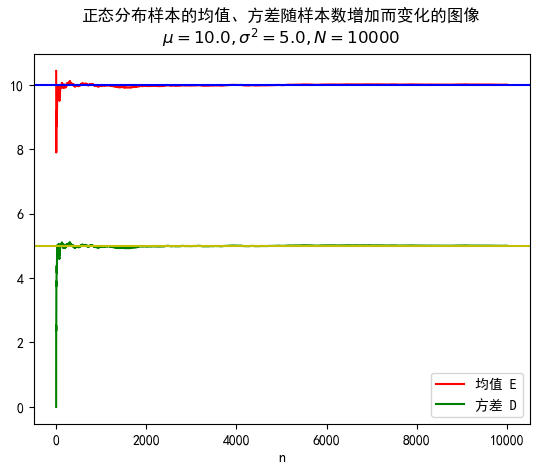

随机分布的生成与估计
李一鸣
2018 年 9 月 28 日
随机数和随机序列的产生
生成随机序列 X=(X1,X2,...,Xn)，其中每个 Xi 服从 [−2a,2a] 的均匀分布。
生成随机序列 Y=(Y1,Y2,...,Yn)，其中每个 Yi 服从 [−2a,2a] 的均匀分布。
蒙特卡罗投点法：
在边长为 a 的正方形内随机投点，设该点落入此正方形的内切圆中的概率为 Pcircle，则：
Pcircle=SsquareScircle=a2π(2a)2=4π(1)
假定生成的数据中有 m 个在圆内，n 个在圆外。则：
fcircle=nm(2)
对于任一点 (Xi,Yi)，如果满足：
Xi2+Yi2≤(2a)2=4a2(3)
则其在圆内，计入 m 中，否则计入 n 中。
以频率估计概率，我们有：
π=n4m(4)
实验结果：
在实验中取 a=1（其实多少都没有关系，精确度只与样本数相关），取 n=1 000,10 000,100 000,1 000 000 分别进行实验。
随机分布的计算机模拟
高斯分布的模拟
生成均值为 μ=10、方差为 σ=5 的正态分布，并画出均值和方差随样本数增加而变化的图。
设总样本数为 N，记前 n 个样本数据的均值、方差分别为 En 和 Dn，则得到均值、方差矩阵：
E=(E1,E2,...,EN)D=(D1,D2,...,DN)(5)
样本个数矩阵：
N=(1,2,...,N)(6)
我们只需要作出 (N,E) 和 (N,D) 的图像即可。
实验结果：
在实验中取 a=1，取 N=1 000,10 000 分别进行实验。


敌军坦克到达情况的模拟
敌军坦克分队到达我方阵地规律服从泊松分布，平均每分钟到达 λ 辆。
泊松分布的期望值是 λ，也就是说在一分钟之内，到达的坦克数量 T 的分布列为：
P(T=k)=k!λke−λ(7)
我们可以生成 N 组数据 T1,T2,...,TN，分别用它们的均值 E(T1),E(T2),...,E(TN) 表示第 1,2,...,N 分钟内到达的坦克数量存入 A=(A1,A2,...,AN)中，则在 N 分钟内坦克到达总数量 Atotal 满足：
Atotal=n=1∑NAn(8)
实验结果：
取 λ=4,N=3，对样本数进行改变，得到如下实验结果：
每辆敌军坦克到达的时刻服从期望为 λ1 的指数分布，也就是说坦克到达的时间 S 的分布函数为：
FS(x)=e−λx(9)
我们可以生成 M 组数据 S1,S2,...,SM，分别用它们的均值 E(S1),E(S2),...,E(SM) 表示第 1,2,...,M 辆坦克到达所需的时间，将其存入 B=(B1,B2,...,BM)中，则在 N 分钟内每辆敌军坦克到达时间为：
B′=(Bi′=1∑jBj∣j∈[1,M]whereBi′<N)(10)
实验结果：
取 λ=4,N=3，对样本组数 M 进行改变，得到如下实验结果：
基于高斯分布混合模型的模式分类方法
考虑水果聚类问题，水果的属性 X 满足高斯分布，其均值向量、协方差矩阵分别为 μ,Σ，将其概率密度记为 p(X∣μ,Σ)。
定义高斯混合分布：
pM(X)p(X∣μi,Σi)=i=1∑kαip(X∣μi,Σi)=(2π)D/2∣Σi∣21exp{−21(X−μi)TΣi−1(X−μi)}(11)
该分布由 k 个混合分布组成，每个混合成分对应一个高斯分布，其中 μi,Σi 是第 i 个高斯混合成分的参数，αi 为选择第 i 个混合成分的概率，满足：
αi>0,i=1∑kαi=1(12)
记样本 Xj 属于第 i 个高斯成分的后验概率为 yji，有：
yji=pM(xj)αip(xj∣μi,Σi)=∑l=1kαlp(xj∣μl,Σl)αip(xj∣μi,Σi)(13)
为了得到混合分布的各个组成部分的分布参数，我们需要利用 EM 算法 (Expectation–maximization algorithm) 不断迭代来获取 k 个类的均值和方差参数。
E 步：
根据当前参数计算样本后验概率 Y=(yji)ji
M 步：
根据后验概率更新模型参数 {αi,μi,Σi∣1≤i≤k}，新的参数与后验概率应该满足下面的关系：
αi′μi′Σi′=N∑j=1Nyji=∑j=1Nyji∑j=1Nyjixj=∑j=1NyjiΣj=1Nyji(xj−μi′)(xj−μi′)T(14)
不断重复 E、M 两步直到收敛。
实验结果：
现有水果数据 S：
S=(S1,S2,...,SN)(15)
其中 N = 30，Si 为二维列向量，包含密度、含糖率两个属性，我们随机初始化一组参数：
α1μ1Σ1=α2=α3=31=S6,μ2=S22,μ3=S27=Σ2=Σ3=(0.10.00.00.1)(16)
令迭代次数 I=50，将得到的结果以散点图绘制如下：
详细计算过程参见 em-50.txt。
参考文献
- [Monte Carlo method | Wikipedia]
- [Expectation–maximization algorithm]